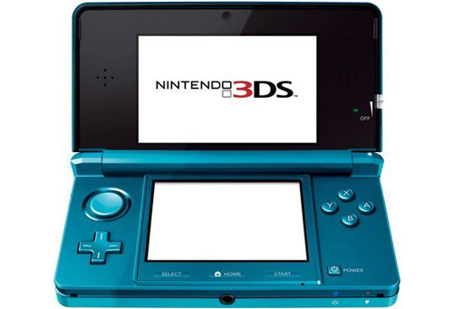

NINTENDO 3DS

Características
- Fecha de lanzamiento → 2011
- Fecha de descontinuación → 2020
- Desarrollador → Nintendo
- Fabricante → Nintendo
- Procesador → 128-bits
- Formato → Tarjetas DS
- Puertos → NO
- Ventas → 77.490.000 unidades
- Generación → Octava
Videoconsola portátil de la multinacional Nintendo, para videojuegos y multimedia, cuya atracción principal es poder mostrar gráficos en 3D sin necesidad de gafas especiales, gracias a la autoestereoscopia. La consola es retrocompatible con la Nintendo DS y con el software de DSiWare. Fue creada con una inmensa cantidad de colores y tuvo en total 6 modelos.